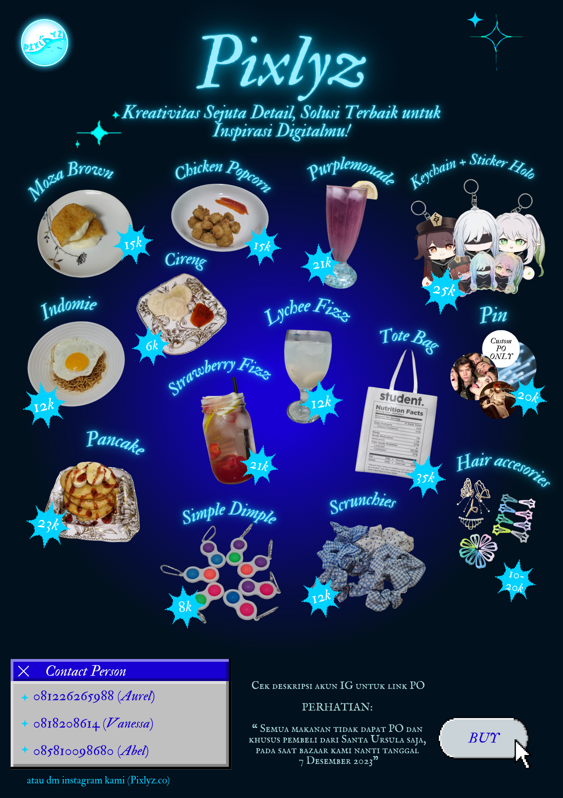

Rencana Kegiatan
2.1 Perencanaan Produk
Jika ingin berjualan, kami perlu memikirkan dengan matang produk yang akan dijual. Kami dari kelompok 3 atau kelompok Pixlyz menjual
sebanyak 14 produk yaitu Moza Brown yang merupakan hashbrown berisi mozzarella, Chicken Popcorn yang merupakan ayam yang dipotong
kecil-kecil dan digoreng dengan tepung. Purplemonade yaitu minuman lemonade yang diberi warna dengan bunga telang, Keychain dan sticker
berkarakter dari game “Genshin Impact”, Indomie yang kami kreasikan menjadi pizza mie, cireng, Lychee Fizz yang merupakan minuman soda dengan
campuran lychee, pin bertemakan band One Direction dan Taylor Swift, Pancake, Strawberry Fizz yang merupakan soda dicampur dengan stroberi,
Tote Bag, berbagai macam Hair Accessories, dan Scrunchies.
Kami mendapatkan berbagai macam ide produk dengan mengumpulkan ide setiap anggota kelompok. Selain itu, kami juga melihat-lihat dari
aplikasi E-Commerce untuk mengumpulkan ide. Segala ide yang kami dapatkan kami satukan sehingga kami menemukan produk-produk yang tepat
untuk dijual. Sebelum 14 produk pasti yang kami jual, terdapat banyak sekali ide yang kami kumpulkan. Namun, dari hasil diskusi kami, tidak
semua ide yang kami kumpulkan cocok dengan kegiatan bazaar ini. Kami mempertimbangkan banyak hal dalam pemilihan produk yang kami jual dalam
bazaar ini. Hal yang kami pertimbangkan seperti pasar dan minat pembelian dari siswi SMP Santa Ursula, produk-produk yang kemungkinan besar
dijual juga oleh kelompok lain, dan banyak pertimbangan lainnya. Contohnya, kami berpikir bahwa kelompok lain pasti banyak yang ingin mengadakan
photo booth dan ternyata kelompok yang mengadakan photo booth di kelas IX-1 terdapat enam dari delapan kelompok yang mengadakan photo booth
sehingga kelas kami memutuskan untuk mengundi kelompok yang boleh mengadakan photo booth. Kelompok kami sudah memprediksi ini sejak awal
sehingga kami tidak berniat untuk membuka photo booth sejak awal. Setelah berpikir panjang, kami menjual lebih banyak makanan dibandingkan
barang. Hal tersebut dikarenakan kelompok kami berpikir kalau misalkan barang yang kami jual tidak habis, kami dapat memakan sisa
makanan yang tidak terjual. Tetapi jika yang kami jual barang belum tentu semua anggota kelompok kami ingin menggunakan atau memakai
barang tersebut sehingga kami menjual lebih banyak makanan.
Kami memiliki produk bioteknologi yang kemudian kami olah. Kami membuat butter, buttermilk, dan keju. Butter dan buttermilk kami buat dengan mengaduk krim lama. Setelah mengaduk, lama kelamaan, krim akan menggumpal dan butter serta buttermilk terpisah. Streptococcus lactis dan lectonostoceremoris adalah mikroorganisme yang digunakan dalam proses pengasaman untuk membuat butter. Berikutnya, rasa tertentu ditambahkan ke susu, dan lemak di mentega dipisahkan. Untuk menghasilkan mentega yang siap untuk dinikmati, lemak mentega harus diaduk. Kemudian keju, kami menggunakan susu dan cuka. Susu dipanaskan dan kemudian diberikan cuka. Bakteri Lactobacillus dan Streptococcus juga diperlukan untuk membuat keju. Bakteri ini membantu fermentasi laktosa pada susu menjadi asam laktat. Ini terjadi selama proses pembuatan keju, di mana susu dipanaskan hingga 90 derajat Celcius, yang dikenal sebagai pasteurisasi. Setelah itu, kami dapat mendinginkannya hingga 30 derajat Celcius. Selain itu, masukkan bakteri asam laktat. Kegiatan bakteri ini menurunkan pH susu dan menghasilkan cairan whey dan dadih padat. Selanjutnya, enzim renin ditambahkan dari lambung sapi muda untuk mendapatkan dadih. Klimosin, enzim buatan, kemudian menggantikan enzim renin dewasa. Dengan menambahkan garam, dadih dipanaskan hingga 32–420 derajat Celcius. Selanjutnya, ditegaskan agar dapat membuang air dan disimpan sampai matang. Setelah terbentuk, protein kemudian diperas dan dimasukkan ke dalam makanan sapi.
Salah satu produk yang kami gunakan untuk membuat produk makanan kolaborasi dengan bioteknologi adalah moza-brown (mozzarella hash brown).
Kami membuat keju dari susu dan cuka, setelah itu kejunya kami campur dengan potongan kentang sehingga menjadi moza-brown.
Selain itu,
kami juga membuat butter dan buttermilk. Produk kami yang menggunakan butter dan buttermilk adalah pancake. Buttermilk kami gunakan sebagai
salah satu bahan dasar pembuatan pancake, sedangkan butter kami gunakan untuk memasak pancake tersebut. Tidak hanya pancake, kami juga
menggunakan butter sebagai subsidi minyak dalam beberapa makanan, seperti moza-brown.
Kami juga menjual chicken popcorn sebagai produk prakarya kami. Bahan dasar chicken popcorn adalah ayam yang dimarinasi dan dibaluri tepung Kami memilih chicken popcorn karena sesuai dengan apa yang diperlukan untuk ketentuan prakarya, serta merupakan makanan lezat yang digemari banyak murid SMP Santa Ursula. Selain itu, chicken popcorn berbentuk bulat kecil-kecil, sehingga dapat dijual dengan harga murah, yaitu Rp 15.000,00 walaupun tetap untung.
Sedangkan kami memilih pancake karena satu-satunya makanan yang menggunakan buttermilk dan mayoritas konsumen sudah familiar dengan adalah
pancake. Kami menjual pancake dengan harga Rp 23.000,00. Sedangkan kami memilih moza-brown, karena kentang merupakan bahan dasar yang cukup
murah, mudah diolah, dan dapat diolah dengan bahan bioteknologi kami, yaitu keju. Sehingga kami dapat menjualnya dengan harga Rp 15.000,00.
Kami juga menjual Indomie, walaupun awalnya tidak diperbolehkan oleh guru-guru, namun kami menyepakati bahwa kami akan memasak indomie di
rumah dan membuatnya menjadi Indomie pizza yang dijual dengan harga Rp 12.500,00, dan kami akan memanaskannya di sekolah. Kami juga menjual
cireng, karena pada saat berbelanja pertama kali, kami mendapatkan gratis cireng kemasan, sehingga kami memutuskan untuk menjual cireng dengan
harga Rp 6.000,00 untuk 3 buah cireng.
Untuk makanan, kami menggunakan dua kemasan, namun keduanya merupakan kemasan dengan bahan dasar kertas.
Kami juga menyiapkan tusuk untuk chicken popcorn dan sendok garpu. Kemasan pertama adalah kemasan kecil, untuk chicken popcorn yang merupakan
kemasan berbentuk persegi, sedangkan kemasan besar untuk Indomie, pancake dan produk lainnya, dengan bentuk persegi panjang.
Sedangkan minuman yang kami pilih adalah strawberry-Fizz, Lychee-Fizz, dan Purplemonade.
Strawberry Fizz adalah minuman berbahan dasar
sirup stroberi, yang kemudian diberikan sprite sehingga menjadi minuman yang enak dan menyegarkan. Kami menjualnya dengan harga Rp 15.000,00.
Untuk pembuatan strawberry fizz, kami membuat sirupnya di rumah, karena harga stroberi yang cukup mahal, dan kami tetap ingin ada potongan
buah stroberi dalam minuman tersebut, bukan hanya sirupnya. Sehingga kami mengolah dan membuat sirup tersebut sedemikian rupa agar tetap
memiliki potongan buah stroberi namun tidak menghabiskan modal yang banyak. Sama dengan Lychee Fizz. Minuman ini juga terdiri dari sirup
leci dan soda, namun berbeda dengan strawberry fizz, lychee fizz menggunakan potongan leci asli dari buah leci kalengan, karena harganya
lebih murah dan agar terlihat tetap menarik. Kami menjualnya dengan harga Rp 12.000,00. Sedangkan purplemonade kami pilih karena terlihat
unik, dengan warnanya yang dapat berubah jika ditambahkan lemon. Minuman ini dibuat dari bunga telang yang menjadi teh berwarna biru, namun
jika ditambahkan lemon akan berubah menjadi warna ungu. Kami memilih minuman tersebut karena unik, dan dapat mendapat perhatian konsumen.
Kami menjualnya dengan harga Rp 12.000,00. Minuman kami menggunakan kemasan yang sama, yaitu gelas plastik dengan tutup datar, dan setiap
minuman kami berikan satu sedotan.
Selain produk-produk yang merupakan makanan, kami juga memiliki produk-produk yang berupa barang. Produk-produk kami terdiri atas berbagai hal.
Mulai dari aksesoris rambut, kami memilih aksesoris rambut setelah memperhatikan banyak siswi SMP Santa Ursula yang gemar memakai aksesoris
rambut ke sekolah, terutama aksesoris berupa jedai, scrunchie, dan jepitan.
Ide penjualan jedai diberikan oleh Aurel. Maka kami memutuskan
untuk menjual empat macam jedai baik secara pre-order (PO) dan bazaar, dan satu jedai khusus PO. satu jedai yang dikhususkan untuk PO dikarenakan
ketika membuka PO, stok jedai tersebut habis untuk pembeli PO, dan kami tidak ingin membeli jedai lebih banyak, karena takut akan terjadi
kerugian jika kelebihan stok. Selain itu, kami juga menjual jepitan. Jepitan yang kami jual terdiri dari jepitan berbentuk hati dan bintang.
Kami menjual tiga macam jepitan, dua untuk PO dan bazaar, dan satu khusus bazaar sebagai pengganti jedai. Kami menjualnya dalam dua macam kemasan,
satu berisi sepuluh jepitan yang berharga Rp 20.000,00 dan satu lagi berharga Rp 10.000,00 dan berisi empat jepitan. Namun, tidak semuanya
berharga segitu karena kami beberapa kali memberikan jepitan tersebut sebagai bundle sehingga terdapat potongan harga. Pada akhir-akhir bazaar,
kami juga menjual jepitan yang berisi empat jepitan dengan harga Rp 8.000,00. Pada plastik jedai, kami memberikan logo kelompok kami, sedangkan
untuk jepitan-jepitan, pada kemasan yang berisi 4 kami mencetak logo kelompok kami sebagai latar dan menjepit jepitan tersebut dan melapisinya
dengan plastik, agar terlihat lebih profesional.
Selain itu, kami juga menjual scrunchie dan simple dimple. Menjual simple dimple dan scrunchie adalah ide Vanessa dan semua anggota kelompok
setuju. Namun, sebelum berpikir untuk menjual simple dimple kami kepikiran untuk menjual popsocket, tetapi karena menurut kami popsocket sudah
tidak terlalu zaman dan rata rata semua orang sudah punya dan sudah pernah beli, jadi karena itu kami memutuskan untuk menjual simple dimple
karena menurut kami mainan tersebut masih zaman dan belum semua orang pernah beli atau punya. Jadi kami semua setuju untuk menjual simple dimple
dan tidak menjual popsocket.
Namun, sama dengan saat kami menentukan untuk menjual scrunchies. Sebelum kami kepikiran untuk menjual scrunchies
kami kepikiran untuk menjual phone strap, tetapi karena sudah hampir semua kelompok di kelas menjual phone strap jadi kami memutuskan untuk
ganti, setelah memutuskan untuk ganti kami sempat memutuskan untuk menjual phone chain karena kami lihat belum ada yang menjual phone chain,
tetapi setelah mencari, kami baru mengetahui kalau mau memasang phone chain perlu membolongkan case HP terlebih dahulu, dan karena hal itu
kami memutuskan untuk tidak menjual phone chain karena susah untuk memasangnya. Setelah memutuskan untuk tidak menjual produk tersebut,
Vanessa kepikiran untuk menjual scrunchies, maka kami sekelompok setuju dan akhirnya kami menjual scrunchies.
Selain itu, kami juga menjual pin dan pin custom. Awal sebelum kami memikirkan ide untuk menjual pin ini Rachel sebagai pemberi ide ingin
menjual enamel pin, tetapi untung saja ia mengkoordinasikan dengan anggota yang lain, dan kami pun menyarankan untuk tidak menjual enamel pin
karena enamel pin memiliki harga yang kurang terjangkau. Oleh karena itu, Rachel pun memikirkan hal lain dengan menjual Pin biasa berupa 3
buah per bungkus dengan harga Rp. 20.000,00. Pin yang kami jual memiliki 3 tema yaitu tema laut biru, One Direction, dan Taylor Swift.
Sedangkan pin custom kami buat sesuai orderan melalui g-form. Dari pemesanan di g-form kami mendapatkan pesanan pin custom sebanyak 10 paket
dengan isi 3 buah masing-masing paket dan 4 paket pin biasa dengan isi 3 buah masing-masing paket. Setelah itu, sisa pin biasanya yang berjumlah
sekitar 23 paket, kami jual saat bazaar dan menyisakan 7 buah, karena masih sisa, akhirnya Rachel pun membagikan 7 paket pin tersebut kepada
kenalannya untuk dibagikan kepada keponakannya di kampungnya.
Keychain dan stiker juga kami jual dengan harga Rp25.000,00. Keychain dan stiker ini dijual secara satu paket berisi satu Keychain dan
satu stiker. Ide produk ini diajukan oleh Abel, dan ia pun membuat desain produk sendiri. Keychain dan stiker ini memiliki tiga desain yang
diambil dari dua game yaitu “Genshin Impact” dan “Honkai: Star Rail”. Selama tahap persiapan bazaar, Abel membuat desain produk ini.
Proses pembuatan desain memakan waktu sekitar 1-2 minggu. Setelah tahap pembuatan desain selesai, ia mulai mencoba untuk mencari vendor-vendor
untuk masing-masing produk ini dan membuat batch 1. Keychain dan stiker ini juga memerlukan packaging plastik sehingga ia mencari yang bagus,
namun murah. Pada awalnya, kami memutuskan untuk membuat 15 paket Keychain dan stiker, namun kami mengubah pikiran dan memutuskan untuk membuat
batch 2, yaitu 15 paket Keychain dan stiker.
Terakhir, kami juga menjual tote bag. Ide berjualan tote bag diberikan oleh Keyke. Kami membagi tugas dan yang bertugas untuk membeli tote bag
adalah Keyke. Kami memiliki kesulitan saat mencetak tote bag karena saat kami mencetak dan saat kami sudah selesai mencetak terdapat latar
belakang warna putih dari desain kami yang berbeda dengan warna bahan tote bag. Kami mencoba menggunakan web “remove.bg” namun, tetap saja
terdapat latar belakang warna putih karena desain kami berbentuk tabel yang sulit untuk dihapus warna latar belakangnya. Namun, setelah kami
mencoba menggunakan beberapa aplikasi akhirnya kami dapat mencetak tote bag kami.
2.2 Perencanaan Promosi
Sebelum melaksanakan bazar, kami membuat promosi terhadap stand dan barang dagangan kami. Promosi tersebut terdiri dari poster, postingan
Instagram, dan video. Promosi pertama yang kami buat adalah poster karena poster merupakan hal wajib dan menjadi prioritas kami karena
berhubungan dengan tugas dari mata pelajaran Bahasa Indonesia. Awalnya kami bingung harus menghias posternya seperti apa, sehingga kami pun
mencoba-coba mengotak-atik dan pada akhirnya kami menemukan desain yang tepat, tetapi setelah dipikir-pikir lagi kami melihat poster awal kami
kurang menarik. Akhirnya, kami mengganti sedikit pada latar belakangnya dan menemukan yang tepat dan sesuai dengan kami. Kemudian, kami juga
mengubah tata letaknya yang tadinya kotak-kotak menjadi yang model biasa karena jika menggunakan tata letak yang kotak-kotak, poster kami akan
terlihat membosankan. Poster ini tidak kami buat satu saja, tetapi kami buat beberapa untuk memisahkan antara makanan, minuman, dan barang lainnya.

Setelah poster jadi, kami pun melanjutkan membuat video promosi. Sebenarnya video promosi ini berkaitan dengan mata pelajaran PJOK, dan kami
ditugaskan untuk membuat video TikTok yang mempromosikan barang dagangan atau stand kami. Awalnya kami tidak memiliki kendala dalam membuatnya,
video pertama yang kami buat sudah terlihat seluruh badan dan gerakannya lumayan kompak, hanya saja ada yang kurang fokus. Sehingga kami membuat
video kedua. Pada video kedua, kami memvideokan gerakan yang hanya terlihat setengah badan, tetapi semuanya kompak dan fokus. Namun, ternyata
videonya harus full badan, tidak boleh setengah badan kata Pak Jose, sehingga kami harus membuat video ketiga.
Pada video ketiga ini masalahnya pada anggota kami yang berkurang satu karena harus latihan untuk misa, jadi kami anggota lain terpaksa
membuat videonya tanpa satu anggota tersebut. Namun, pada akhirnya kami memilih untuk tidak mengunggah video tersebut sebagai promosi kami
di Instagram, kami hanya mengunggah di Google Classroom untuk dapat dinilai oleh Pak Jose dan untungnya Pak Jose juga tidak mengharuskan kami
mengunggah video TikTok tersebut ke Instagram sebagai promosi. Jadi, kami pun membuat video lain yang tidak memperlihatkan kami dan hanya
menyajikan tulisan serta gambar-gambar produk kami. Terakhir, kami membuat postingan Instagram yang desainnya sudah mengikuti poster dan video,
sehingga pembuatan postingan Instagram ini tidak terlalu lama. Setelah semua promosi kami selesai, kami pun mengunggahnya pada drive yang telah
disediakan oleh guru Bahasa Indonesia yaitu Bu Jul.
2.3 Perencanaan booth
Pada awalnya, kami berpikir untuk membuat booth bertemakan kartun “Super Mario” yang merupakan kartun permainan dari Jepang yang dirilis pada
pertengahan tahun 1985. Awalnya kami berpikir untuk membuat tema ini dikarenakan Super Mario merupakan sebuah kartun yang umum maka semua
orang pasti mengetahui dan menyukai kartun ini. Namun, menurut kami, ada banyak kelompok yang menggunakan tema ini sehingga mungkin akan
membosankan lalu kami akhirnya berpikir ulang dan berdiskusi yang pada akhirnya kami memutuskan untuk membuat tema dari permainan gadget
“Tetris” yang dirilis pada tahun 1984. Dikarenakan temanya yaitu “Tetris”, kami memutuskan untuk mengambil nama kelompok dari kata “pixel”
yang kami kembangkan menjadi “Pixlyz”. Selain itu, kami juga memutuskan untuk membuat sebuah maskot berwarna biru yang berbentuk slime dan
kucing. Kami memberi nama maskot kami “G-MLZ” yang merupakan singkatan dari “nggak malaz”. Kami memberi nama tersebut sebagai salah satu
penyemangat bagi anggota-anggota kami. Seiring berjalannya waktu, tema kami yang awalnya “Tetris” berkembang menjadi Futuristic Technology.
Walaupun sudah berubah tiga kali, tetapi tema Futuristic Technology yang kami ambil tetap konsisten hingga akhir proyek kami berjalan.
Booth kami terletak di paling tengah, bagian depan aula. Kami menggunakan taplak berwarna hitam untuk booth kami, agar dapat lebih menonjolkan
warna tosca neon yang kami pilih karena tema “futuristic technology”. Saat undian penempatan booth, kami awalnya sudah berharap untuk
mendapatkan tempat paling tengah, karena tempatnya strategis dan kami dapat menempatkan lebih banyak dekorasi sehingga lebih menonjol.
Saat mendapatkan booth paling tengah, kami berusaha untuk menggunakan tempat tersebut agar lebih menonjol. Walaupun warna dasar kami hitam,
kami juga menggunakan warna yang lebih terang dan mencolok, yaitu tosca neon, agar dapat menarik perhatian pelanggan. Mendapat booth paling
tengah juga membuat kami dapat menaruh barang lebih di belakang dan dekorasi yang lebih banyak.
Pada saat hari pelaksanaan bazaar, kami menggunakan baju berwarna hitam dan menggunakan rok sekolah. Alasan kami menggunakan baju berwarna
hitam adalah, karena semua anggota memiliki warna hitam, sehingga mempermudah. Warna hitam juga sama dengan warna latar belakang dan
taplak meja. Kami juga mempertimbangkan waktu yang kami miliki dengan pergantian baju. Sehingga kami memutuskan untuk menggunakan rok sekolah,
untuk mengurangi waktu untuk mengganti baju, sehingga kami dapat fokus untuk memanaskan produk-produk seperti makanan berupa pancake, cireng,
hash brown, dan lain-lain. Dengan booth yang berada di tengah-tengah, kami mendapat cukup banyak pelanggan.